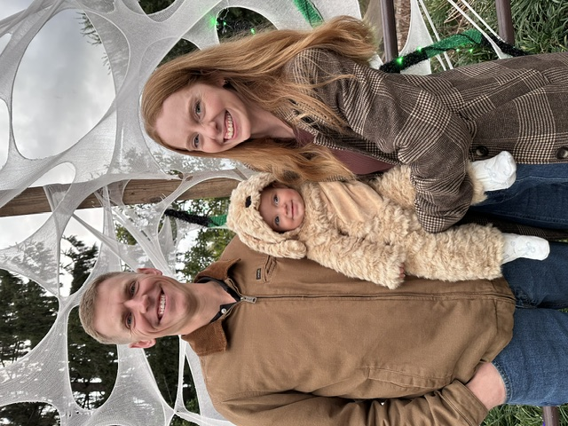

A LITTLE ABOUT ME
Louisville roots.
A drive to build better.

I grew up in Louisville, Kentucky, and family is at the heart of my life. My wife, Kendall, and our daughter, Eliza, are a big part of who I am beyond my work.
I studied Materials Science and Engineering at the University of Kentucky, building a foundation for my passion for manufacturing. I’m drawn to understanding how things are made and finding ways to make the processes behind them work better.
That curiosity carried into my career at GE Appliances and my MBA at the University of Louisville, where I broadened my perspective from engineering to the business decisions that shape products and operations.
Working in final-mile delivery and system development sparked my interest in customer experience and product management. I saw how a system’s details can shape a customer’s experience—and how listening to the people using it can reveal opportunities to make that experience better.
Today, I bring that perspective to digital product delivery: translating frontline feedback into requirements, prioritizing the backlog with Digital Technology, and coordinating testing, training, and launch readiness. I’m excited to keep connecting engineering, operations, and customer needs through product management.